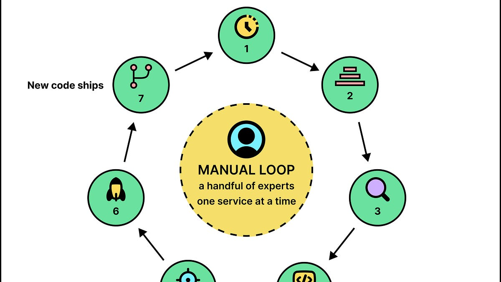
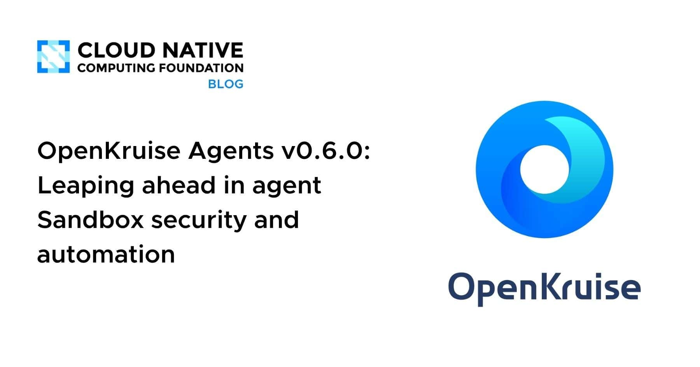
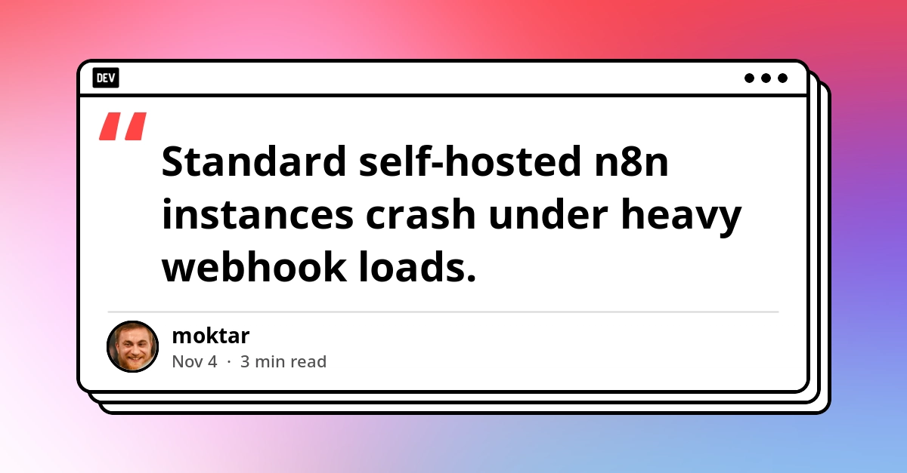
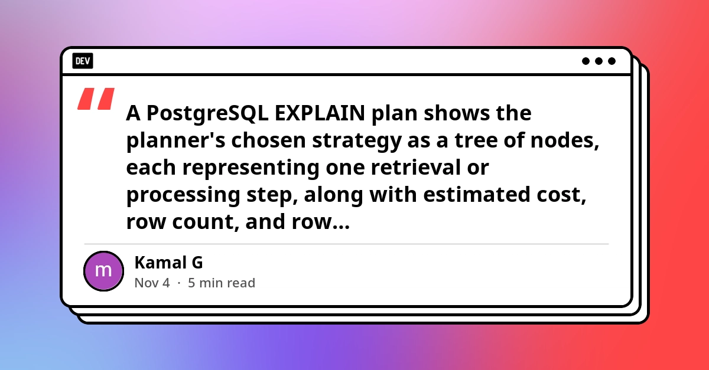
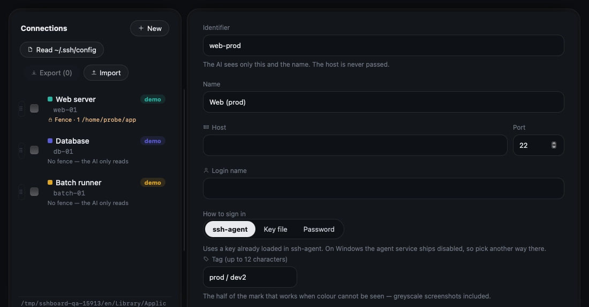
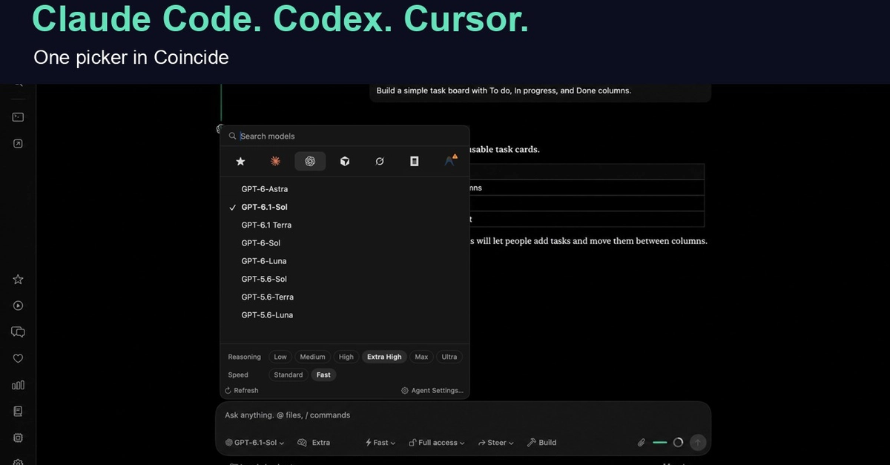
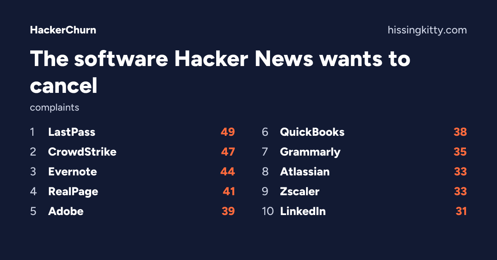
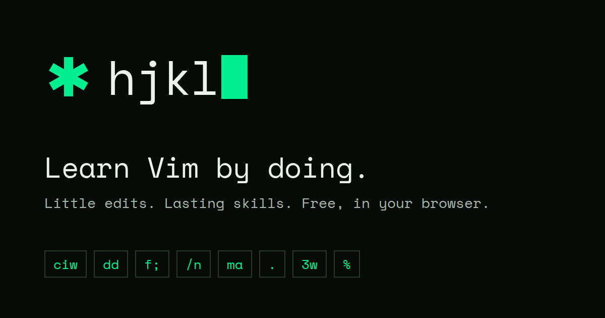

🔥 Top 3 (must read)
How Revolut Cut Its AI Coding Bill 90% by Self-Hosting an Open-Weight Model
Revolut gave AI coding assistants to about 2,000 engineers, and some of them spent $1,000 to $10,000 a month on tokens with little clear return. The company stopped using frontier APIs as the default and moved engineers to a self-hosted open-weight model, which cut the bill by about 90%. Why it matters: This is a real example of AI tool costs growing with team size. It is useful if you have to justify or control your team's spend on coding agents.
How Netflix Uses AI Agents for Performance Engineering
Netflix engineering built a system of autonomous agents for performance engineering. ByteByteGo explains how it works. Why it matters: This case study connects your SRE and system design interests with how a large team uses agents in production, not only for writing code.

OpenAI seems to be silently re-enabling model training on Codex chats
A popular Hacker News thread (439 points, 139 comments) reports that OpenAI may be turning model training on Codex chats back on without telling users. The comments discuss what this means for code and data that people share with the tool. Why it matters: If anyone on your team uses Codex on company code, check the data-training settings now. Also add this to your AI tool policy.
N
🛠 Tools & releases
OpenKruise Agents v0.6.0
: a CNCF sub-project that manages agent sandboxes at scale on Kubernetes. This release adds better sandbox security and automation.

Deploy n8n in "Queue Mode" on Hetzner for $5/mo
: a self-hosted n8n setup with Redis, Postgres, a web process and a separate worker. This setup keeps n8n running under heavy webhook load.

How to read PostgreSQL EXPLAIN output
: a practical guide to reading query plans. Useful for any Node backend that uses Postgres.

🤖 AI for developers
Let your AI agent look at your server without handing it a shell
: lets an agent see service status and config files over your SSH session, but it never gets a full shell. This is a safer pattern for ops work with agents.

Coincide: one agent picker for Claude Code, Codex and Cursor
: a native Mac app that runs several coding agents in one place. You can switch agent and model with one shortcut.

Arnis: one maintainer + GitHub Copilot
: a side project that grew large. Its author now maintains it alone with help from Copilot.
👔 Engineering & teams
Revolut's self-hosted AI coding model
and the Codex training thread together show two problems that come with team-wide AI adoption: cost control and data policy. Both are good topics for your next team discussion on AI tools.
🎯 For me
EM + AI adoption: Revolut's 90% cost cut (2,000 engineers, some spending up to $10,000 a month each).
SRE / distributed systems: Netflix's performance agents and OpenKruise Agents on Kubernetes.
Node backend: the Postgres EXPLAIN guide.
Safe agent ops: the read-only SSH pattern for agents.
💡 App ideas & indie builds
Hacker Times
(HN): Hacker News shown with a New York Times newspaper layout. Problem: a plain link list is hard to scan. Idea for you: a new layout for an existing feed can be a full product (451 points).
H
HackerTV
(HN): the YouTube videos HN recommends most, shown as 24/7 TV channels. Problem: you have to choose what to watch. Idea for you: turning saved content into "lean-back" channels works with any curated list.
H
HackerChurn
(HN): shows which SaaS tools HN users want to cancel. Problem: it is hard to find honest signals about a product. Idea for you: collecting opinions from public discussions can become a useful dataset.

hjkl, a Vim practice game
(HN): a small browser game for learning Vim commands. Problem: drills are boring. Idea for you: a game makes a hard developer skill fun to learn. The same idea could work for git, regex or shell commands.

🎓 Try this
Take one slow query from your Node backend. Run plain
EXPLAIN first, then EXPLAIN ANALYZE only where it is safe, because it really runs the query. Read the plan from the leaves up to the root. Look for nodes where the estimated rows and the real rows are very different. Guide: How to read PostgreSQL EXPLAIN output.